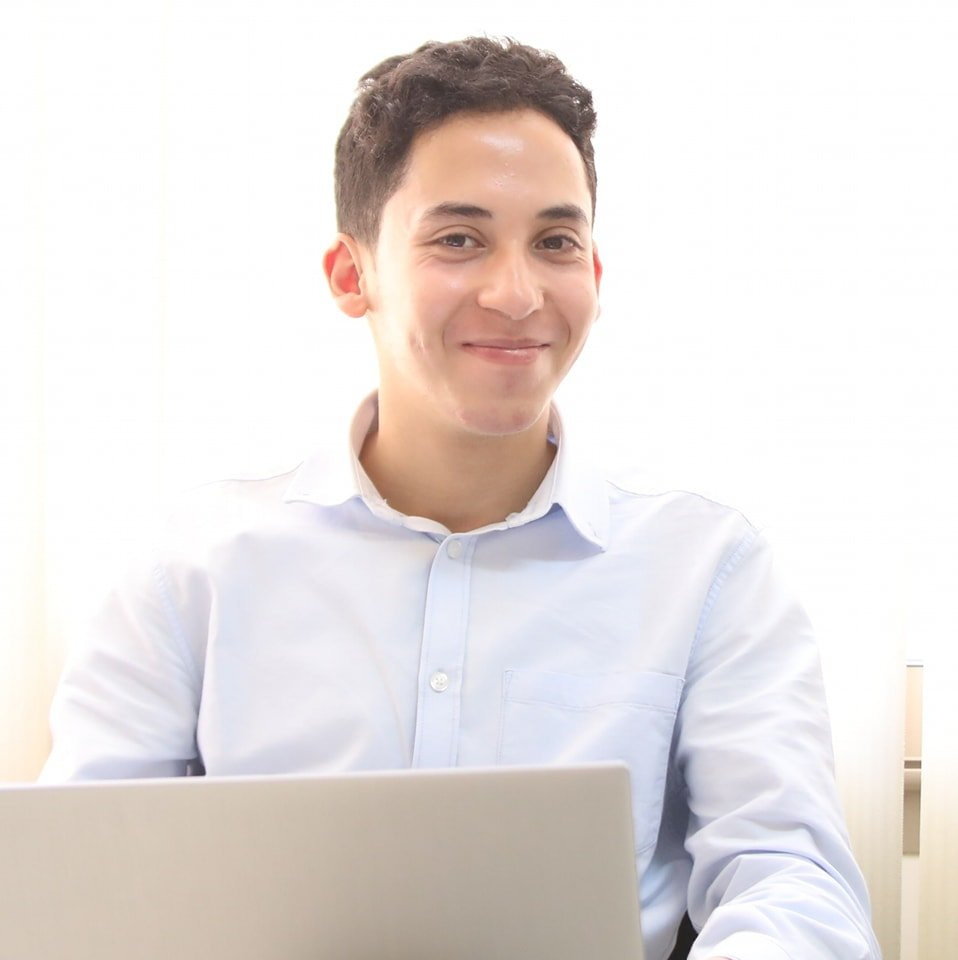

Journalism.
Communication.
Digital content.
Turning information into meaningful communication. A journalist and Digital Content Manager working across institutional communication, editorial development and digital storytelling.
Arabic · French · English
A journalistic perspective. A communication-driven approach.

My professional background combines journalism, political communication and digital content management.
At Online Value, an agency specializing in digital public communication, I contribute to projects involving Moroccan governmental institutions, ministries, political figures, international organizations and private-sector stakeholders.
My work brings together editorial thinking, information analysis and project coordination, translating institutional activities and complex subjects into accessible communication for different audiences and platforms. I work closely with creative and production teams, providing direction, ideas, briefs and references while following projects through their development.
What I bring to a project.
Editorial judgement, institutional awareness, strategic thinking and project coordination.
Core expertise
One thread: making information understood.
From a newspaper desk in 2018 to institutional communication today: newsrooms and radio studios, summits and forums, scripts and creative briefs.
Al Alam
Editorial intern. Reporting, proofreading, French to Arabic translation.
SNRT Radio
Newsroom reporting in Rabat and Marrakech.
French Embassy
Euro-Mediterranean Young Leaders Forum, Essaouira.
Hespress
Scripts for the mini-documentary series ملفات.
UCLG Africa
Coverage of the Africities Summit.
Online Value
Journalist & Content Manager. Digital public communication for institutions, international organizations and companies: editorial direction, briefs and team coordination.
Reporting. Researching. Telling stories.
Published work across digital documentary, radio reporting, writing and academic research.
Hespress · Mini-documentaries & video scripts
Scripts written for Hespress Media’s video series.
SNRT Radio · Reports
Writing & research
Published writing and academic studies on journalism and communication.

Stories with a purpose.
Self-initiated content, created independently and without a commercial brief, to showcase voice-over, storytelling and influence: videos challenging stereotypes around psychology and mental health, and raising awareness about violence against women.
Stories
Voices .. Seeing Journalism Differently
Let’s connect.
Open to professional opportunities and collaborations in journalism, institutional communication, political communication and digital content management.
Email: yublaouqid@gmail.com
LinkedIn: ayoublaouqid
Location: Morocco